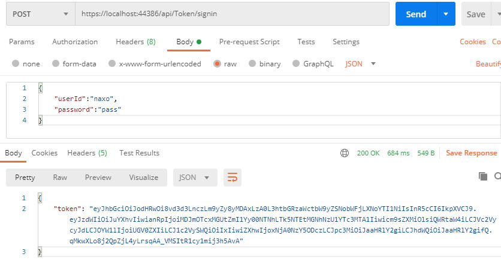

SignalR驗證方式
SignalR 的授權可以選擇使用 Cookie 或 Bearer Token：
- Cookie: 驗證方法與一般網頁別無二致，較容易實作但缺點是只能用於瀏覽器(browser-specific)。
- Bearer Token 可通用於網頁和 App (或提供任何應用程式)，使用 Token 做登入能夠讓應用程式更容易實作其他使用者端，如果有其他的伺服器簽發 Token，更容易整合至單一登入(Single Sign-On)，也是官方建議使用的方式，以下假設簽發 Token 與 SignalR 伺服器為同一台進行實作。
將 Token 驗證實作至伺服器之前，讓我們先練習實作一支簽發 Token 的 API。
以 Option pattern 取得 JWT 設定
這裡練習 Option pattern，以獲取 appsetting.json 當中 JWT 相關設定的強型別支援：
appsetting.json
將 JWT 相關的設定寫到 appsetting.json 當中：
1
2
3
4
5
6
7
8
9
10
11
12
13
14
15
|
{
"Logging": {
"LogLevel": {
"Default": "Information",
"Microsoft": "Warning",
"Microsoft.Hosting.Lifetime": "Information"
}
},
"JWT": {
"Issuer": "Naxo",
"Expires": "1440", // 憑證有效分鐘數
"SignKey": "myNameIsTigernaxo,ThisIsMyPersonalBlog" // 設定簽發/解密憑證的對稱式加密金鑰
},
"AllowedHosts": "*"
}
|
JWT Option 類別
建立 Options.cs ，並在當中新增一個 Option 類別以對應 JWT 設定：
1
2
3
4
5
6
7
8
9
10
|
namespace SignalR
{
public class JWTOption
{
public const string JWT = "JWT";
public string Issuer { get; set; }
public string SignKey { get; set; }
public int Expires { get; set; }
}
}
|
註冊服務容器
在 Startup.cs 的 ConfigureServices 將 JWTOption 註冊到 service container 當中，之後可以直接注入 Controller 使用；
1
2
3
4
5
6
7
8
9
|
public void ConfigureServices(IServiceCollection services)
{
services.AddControllers();
services.AddSignalR();
// 在 service container 當中註冊 JWT Option
services.AddOptions<JWTOption>()
.Bind(Configuration.GetSection(JWTOption.JWT));
}
|
簽發 Token
安裝 Token 套件
筆者在 ASP .NET Core 3.1 的 Web API 專案後，無法直接使用 JWT 相關功能，所以必須先安裝套件：
1
|
dotnet add package System.IdentityModel.Tokens.Jwt --version 6.8.0
|
Login Controller
建立 API 控制器 Controllers/TokenController.cs，並注入 IOptions<JWTOption>：
1
2
3
4
5
6
7
8
9
10
11
12
13
14
15
16
17
18
19
20
21
22
23
24
25
26
27
28
29
30
31
32
33
34
35
36
37
38
39
40
41
42
43
44
45
46
47
48
49
50
51
52
53
54
55
56
57
58
59
60
61
62
63
64
65
66
67
68
69
70
71
72
73
74
75
76
77
78
79
80
81
82
83
84
85
86
87
88
|
using System;
using System.Collections.Generic;
using System.IdentityModel.Tokens.Jwt;
using System.Linq;
using System.Security.Claims;
using System.Text;
using System.Threading.Tasks;
using Microsoft.AspNetCore.Authorization;
using Microsoft.AspNetCore.Http;
using Microsoft.AspNetCore.Mvc;
using Microsoft.Extensions.Configuration;
using Microsoft.Extensions.Configuration.UserSecrets;
using Microsoft.Extensions.Options;
using Microsoft.IdentityModel.Tokens;
namespace SignalR.Controllers
{
[Route("api/[controller]")]
[ApiController]
public class TokenController : ControllerBase
{
private JWTOption _jwtOpt;
// 等待服務容器注入 IOptions<JWTOption>
public TokenController(IOptions<JWTOption> jwtOpt)
{
this._jwtOpt = jwtOpt.Value;
}
[AllowAnonymous]
[HttpPost("signin")]
public IActionResult SignIn(LoginModel loginModel)
{
// 模擬驗證使用者帳號密碼
var canLogin = loginModel.userId == "naxo" && loginModel.password == "pass";
if (canLogin)
{
string issuer = _jwtOpt.Issuer;
string signKey = _jwtOpt.SignKey;
// 設定要加入到 JWT Token 中的聲明資訊(Claims)
List<Claim> claims = new List<Claim>();
// 加入Sub(用戶)
claims.Add(new Claim(JwtRegisteredClaimNames.Sub, loginModel.userId));
// 加入jti(JWT ID) 用於一次性 token
//claims.Add(new Claim(JwtRegisteredClaimNames.Jti, Guid.NewGuid().ToString()));
// 聲明使用者 userId、roles 的 claim，這裡會用來判斷使用者識別碼、使用者群組
claims.Add(new Claim("userId", loginModel.userId));
claims.Add(new Claim("roles", "Admin"));
claims.Add(new Claim("roles", "Users"));
// 建立一組對稱式加密金鑰，主要用於 JWT 簽章之用
SymmetricSecurityKey securityKey = new SymmetricSecurityKey(Encoding.UTF8.GetBytes(signKey));
// 定義加密金鑰、演算法、數位簽章摘要
// HmacSha256 必須大於 128 bits，亦即 key 長度至少要 16 字元
SigningCredentials signingCredentials = new SigningCredentials(securityKey, SecurityAlgorithms.HmacSha256Signature);
// 產生一個 JwtSecurityToken
var token = new JwtSecurityToken(
issuer, // Issuer
issuer, // Audience
claims, // claims
expires: DateTime.Now.AddMinutes(_jwtOpt.Expires), // token 生效至過期的分鐘數
signingCredentials: signingCredentials
);
// 序列化 JwtSecurityToken
var jwt_token = new JwtSecurityTokenHandler().WriteToken(token);
// 回傳 token
return Ok(new
{
token = jwt_token,
});
}
// 驗證失敗
return BadRequest(new
{
err = "登入失敗",
});
}
}
public class LoginModel
{
public string userId { get; set; }
public string password { get; set; }
}
}
|
測試
至此我們已完成了一個簡易的 Token SignIn API，以 Postman 進行測試：

備註
- 驗證使用者帳號/密碼的區段需自行代換成應用程式需要的程式碼。
- Token 當中的 Claim 可視情況自行增減